<!DOCTYPE html>
<html>
   <head>
   	<meta charset="utf-8">
    <title>Danganronpa Fan Website!</title>
    <link rel="stylesheet" type="text/css" href="stylesheet.css">
</head>
<body>
</body>
</html>
<h1>Distrust</h1>
<a href="newpage.html"><button>Next Page</button></a>

<div class="navbar">
<a href="#">About</a>
<a href="#">Hated Characters</a>
<a href="#">Loved Characters</a>
<a href="#">Beta Designs</a>
<a href="#">Loved Ships</a>
<a href="#">The Roles Of The Characters</a>
</div>

<h1>Hello! This website is a website all about <i>Danganronpa</i> like ships, the characters, the most hated in the fandom, and the most loved in the fandom.<h1>


<h2>The most hated Danganronpa character.</h2>
<ul>
<li>Hiyoko Saionji (Danganronpa 2: Goodbye Despair)</li>
<li>Haji Towa (Danganronpa Another Episode: Ultra Despair Girls)</li>
<li>Kokichi Oma (New Danganronpa V3 Killing Harmony)</li>
<li>Kurokuma (Danganronpa Another Episode: Ultra Despair Girls)</li>
<li>Sayaka Maizono (Danganronpa: Trigger Happy Havoc)</li>
<li>Leon Kuwata (Danganronpa: Trigger Happy Havoc)</li>
<li>Korekiyo Shinguji (New Danganronpa V3 Killing Harmony)</li>
<li>Tenko Chabashira (New Danganronpa V3 Killing Harmony)</li>
<li>Tsumugi Shirogane (New Danganronpa V3 Killing Harmony)</li>


<h2>The most loved Danganronpa character</h2>
<ul>
<li>Makoto Naegi (Danganronpa: Trigger Happy Havoc)</li>
<li>Kyoko Kirigiri (Danganronpa: Trigger Happy Havoc)</li>
<li>Aoi Asahina (Danganronpa: Trigger Happy Havoc)</li>
<li>Gundam Tanaka (Danganronpa 2: Goodbye Despair)</li>
<li>Hajime Hinata (Danganronpa 2: Goodbye Despair)</li>
<li>Chiaki Nanami (Danganronpa 2: Goodbye Despair)</li>
<li>Nagito Komaeda (Danganronpa 2: Goodbye Despair)</li>
<li>Mikan Tsumiki (Danganronpa 2: Goodbye Despair)</li>
<li>Kazuichi Souda (Danganronpa 2: Goodbye Despair)</li>
<li>Shuichi Saihara (New Danganronpa V3 Killing Harmony)</li>
<li>Kaede Akamatsu (New Danganronpa V3 Killing Harmony)</li>
<li>Miu Iruma (New Danganronpa V3 Killing Harmony)</li>
<li>Rantaro Amami (New Danganronpa V3 Killing Harmony)</li>
<li>Maki Harukawa (New Danganronpa V3 Killing Harmony)</li>
<li>Kirumi Tojo (New Danganronpa V3 Killing Harmony)</li>
<li>Angie Yonaga (New Danganronpa V3 Killing Harmony)</li>
<li>K1-B0 (New Danganronpa V3 Killing Harmony)</li>
<li>Komaru Naegi (Danganronpa Another Episode: Ultra Despair Girls)</li>
<li>Toko Fukawa (Danganronpa Another Episode: Ultra Despair Girls)</li>


<h2>Beta Designs of the Characters</h2>
<ul>
<li>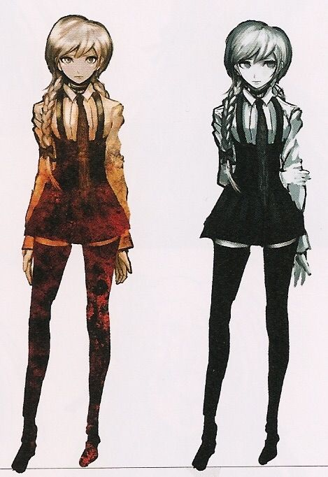
Beta Kyoko Kirigiri</li>
<li>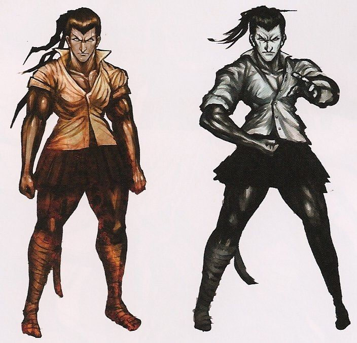
Beta Sakura Ogami</li>
<li>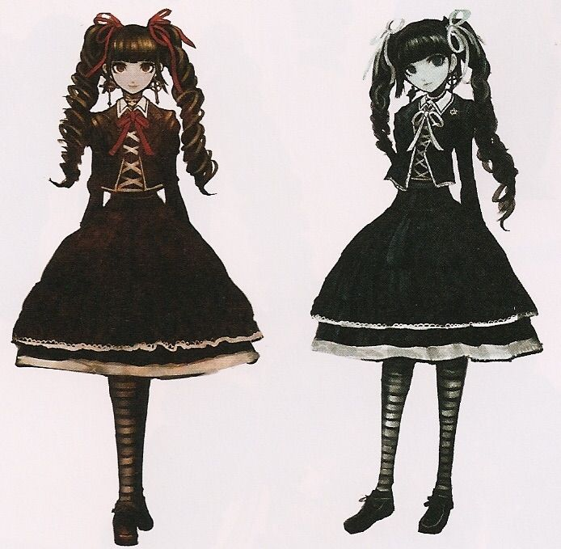
Beta Celestia Ludenburg</li>
<li>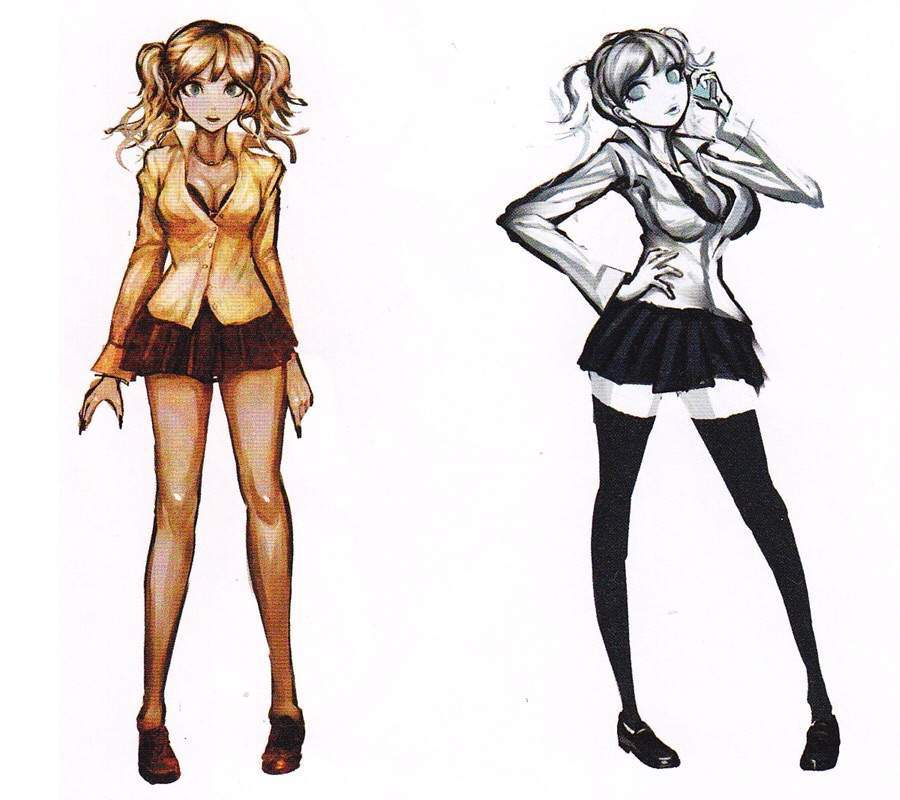
Beta Junko Enoshima</li>
<li>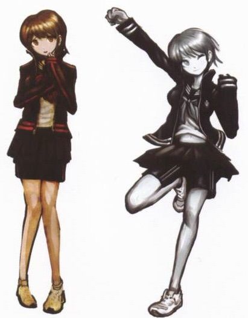
Beta Aoi Asahina</li>
<li>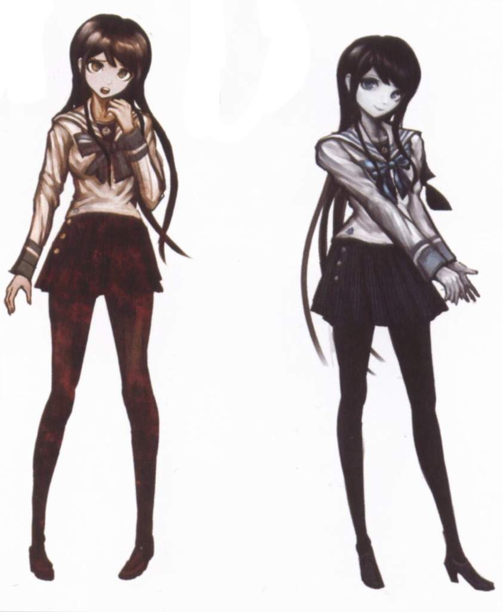
Beta Sayaka Maizono</li>
<li>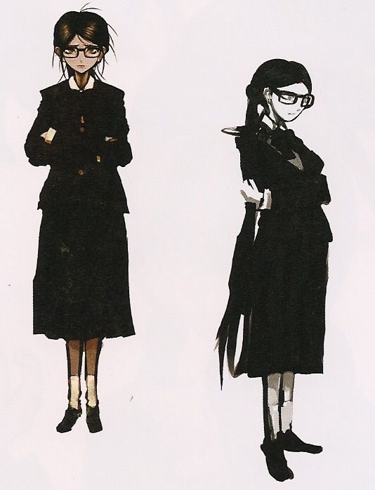
Beta Toko Fukawa</li>
<li>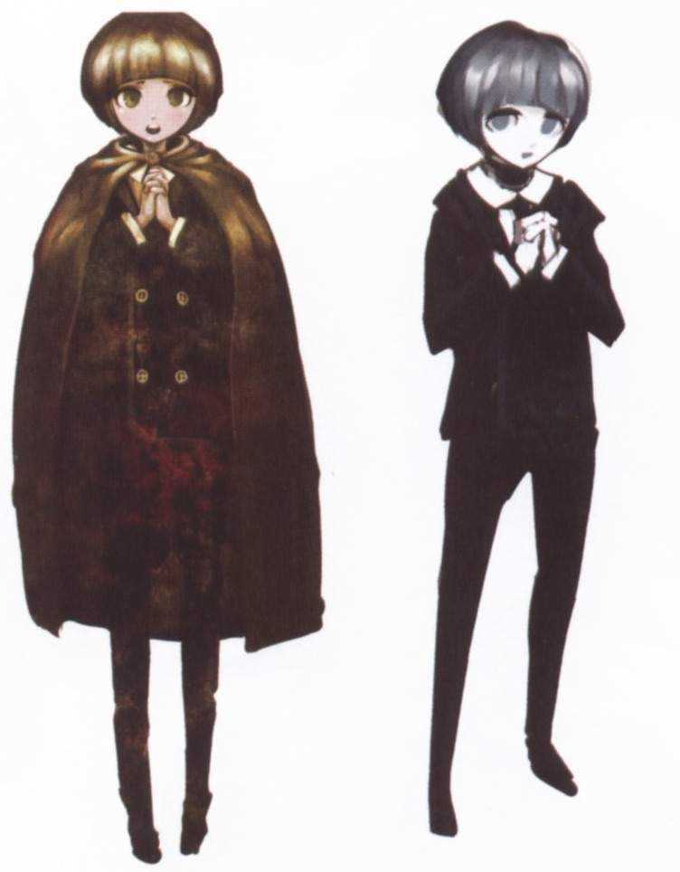
Beta Chihiro Fujisaki</li>
<li>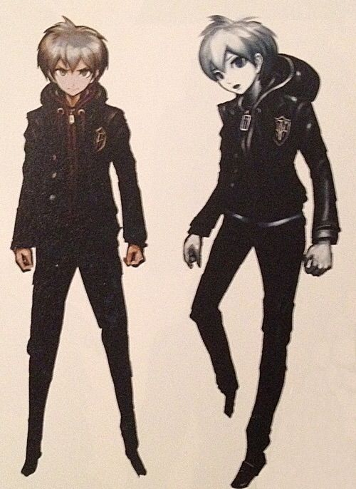
Beta Makoto Naegi</li>
<li>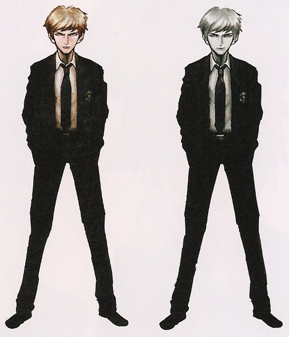
Beta Byakuya Togami</li>
<li>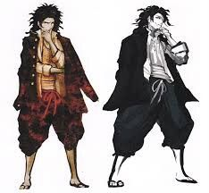
Beta Yasuhiro Hagakure</li>
<li>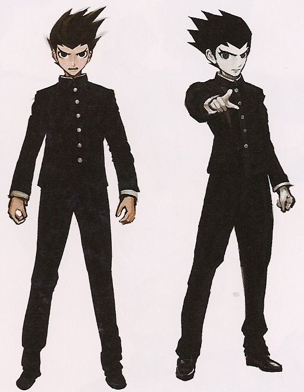
Beta Kiyotaka Ishimaru</li>
<li>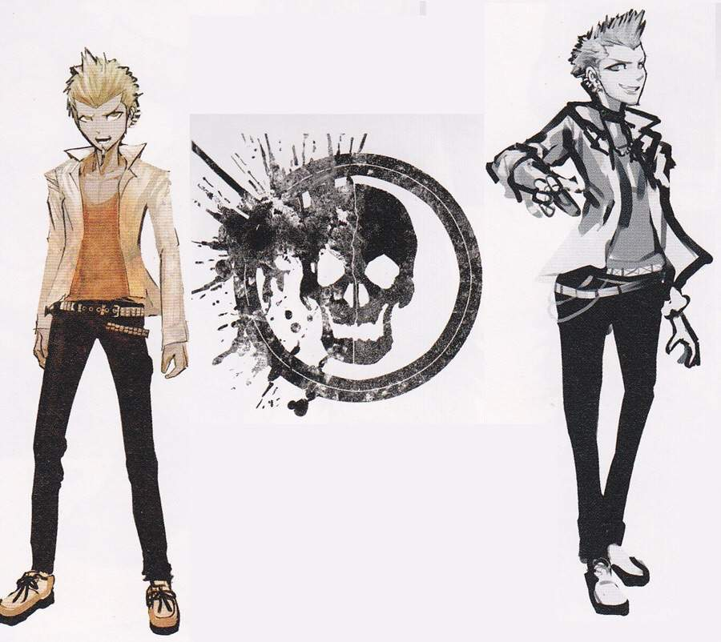
Beta Leon Kuwata</li>
<li>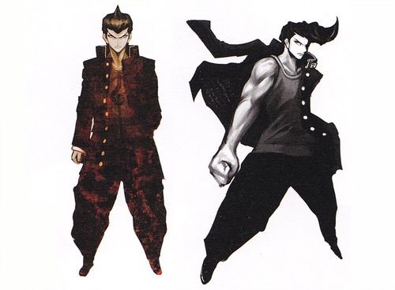
Beta Mondo Oowata</li>
<li>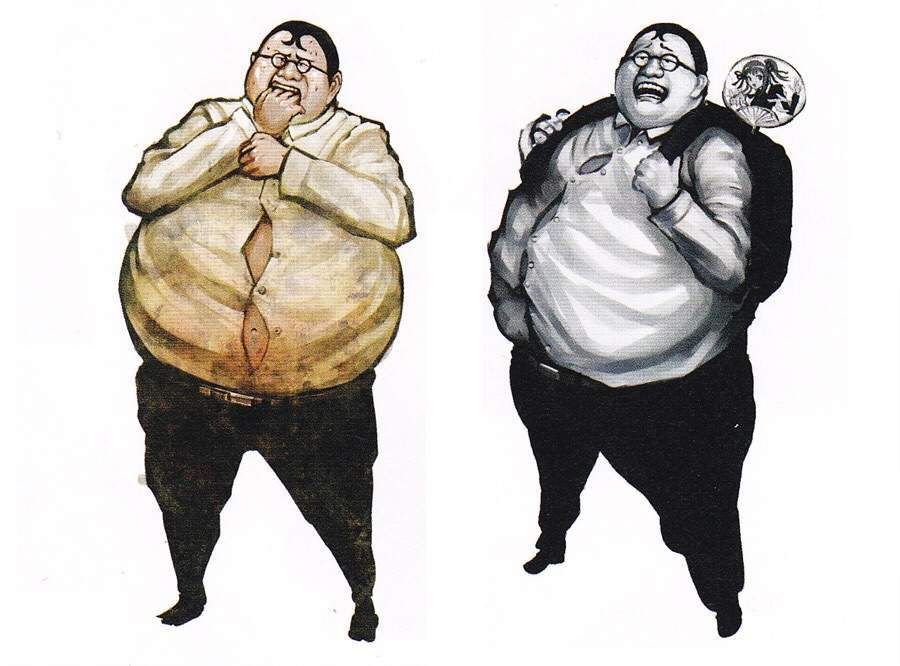
Beta Hifumi Yamada</li>
<li>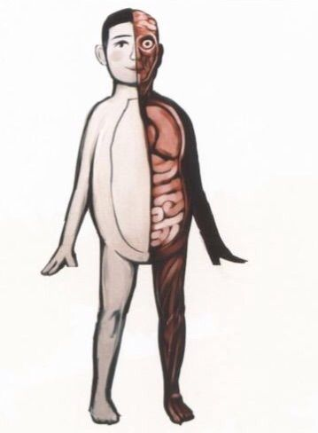
Kinda creepy, but not last Beta Monokuma</li>

<h2>The Most Loved Ships</h2>
<ul>
<li> 1. Makoto Naegi x Kyoko Kirigiri (Danganronpa: Trigger Happy Havoc) </li>
<li> 2. Fuyuhiko Kuzuryuu x Peko Pekoyama (Danganronpa 2: Goodbye Despair) </li>
<li> 3. Kaito Momota x Maki Harukawa (New Danganronpa V3 Killing Harmony)</li>
<li>4. Shuichi Saihara x Kaede Akamatsu (New Danganronpa V3 Killing Harmony)</li>
<li>6. Kokichi Ouma x Shuichi Saihara (New Danganronpa V3 Killing Harmony)</li>
<li>8. Hajime Hinata x Chiaki Nanami (Danganronpa 2: Goodbye Despair)</li>
<li>9. Hajime Hinata x Nagito Komaeda (Danganronpa 2: Goodbye Despair)</li>
<li>10.Tenko Chabashira x Himiko Yumeno (New Danganronpa V3 Killing Harmony)</li>
<li>11.Byakuya Togami x Makoto Naegi (Danganronpa: Trigger Happy Havoc)</li>
<li>12.Makoto Naegi x Mukuro Ikusaba (Danganronpa: Trigger Happy Havoc)</li>
<li> 13.Mondo Owada x Kiyotaka Ishimaru (Danganronpa: Trigger Happy Havoc)</li>
<li>14.Byakuya Togami x Toko Fukawa (Danganronpa: Trigger Happy Havoc)</li>
<li>15.Nekomaru Nidai x Akane Owari (Danganronpa 2: Goodbye Despair)</li>
<li>16.Byakuya Togami x Celestia Ludenberg (Danganronpa: Trigger Happy Havoc)</li>
<li>17.Kokichi Ouma x Himiko Yumeno (New Danganronpa V3 Killing Harmony)</li>
<li>18.Komaru Naegi x Toko Fukawa (Danganronpa Another Episode: Ultra Despair Girls)</li>
<li>19.Miu Iruma x K1-B0 (New Danganronpa V3 Killing Harmony)</li>
<li>20.Kokichi Oma x K1-b0 (New Danganronpa V3 Killing Harmony)</li>

<h2>The Role Of The Characters</h2>
<ul>
<b>DANGANRONPA V1</b>

<li>Junko Enoshima: Mastermind</li>
<li>Mukuro Ikusaba: Victim</li>
<li>Mondo Owada: Killer</li>
<li>Hifumi Yamada: Victim</li>
<li>Leon Kuwata: Killer</li>
<li>Kyoko Kirigiri: Killer/Surviver</li>
<li>Makoto Naegi: Surviver</li>
<li>Byakua Togami: Surviver?</li>
<li>Aoi Asahina: Surviver</li>
<li>Genoside Jack: Surviver</li>
<li>Chihiro Fujisaki: Victim</li>
<li>Sakura Ogami: Traitor</li>
<li>Yasuhiro Hagakure: Victim</li>
<li>Kiyotaka Ishimaru: Victim</li>
<li>Sayaka Maizono: Victim</li>
<ul>
<b>DANGANRONPA ANOTHER EPISODE: ULTRA DESPAIR GIRLS</b>
<li>Byakua Togami: Dead</li>
<li>Jataro Kemuri: Alive</li>
<li>Junko Enoshima: Dead</li>
<li>Komaru Naegi: Surviver</li>
<li>Kotoko Utsugi: Saved</li>
<li>Masaru Daimon: Alive</li>
<li>Nagito Komaeda: Alive</li>
<li>Haiji Towa: Alive</li>
<li>Hiroko Hagakure: Alive</li>
<li>Izuru Kamakura: Alive</li>
<li>Kenshiro: Alive</li>
<li>Kurokuma: Inactive</li>
<li>Makoto Naegi: Alive</li>
<li>Monaca Towa: Alive</li>
<li>Nagisa Shingetsu: Alive</li>
<li>Shirokuma: Inactive</li>
<li>Toko Fukawa: Alive</li>
<li>Aloysius Pennyworth: Alive</li>
<li>Ayaka Haneyama: Alive</li>
<li>Fuhito Kirigiri: Alive</li>
<li>Kanon Nakajima: Alive</li>
<li>Monokuma Kids: Unknown</li>
<li>Taichi Fujisaki: Unknown</li>
<li>Tokuichi Towa: Dead</li>
<li>Yuta Asahina: Dead</li>
<ul>
<b>DANGANRONPA V2</b>

<li>Hajime Hinata: Survivor</li>
<li>Chiaki Nanami: Traitor</li>
<li>Nagito Komaeda: Victim</li>
<li>Mikan Tsumiki: Killer</li>
<li>Byakua Togami: Victim</li>
<li>Sonia Nevermind: Survivor</li>
<li>Akane Owari: Survivor</li>
<li>Ibuki Mioda: Victim</li>
<li>Mahiru Koizumi: Victim</li>
<li>Hiyoko Saionji: Victim</li>
<li>Teruteru Hanamura: Killer</li>
<li>Peko Pekoyama: Killer</li>
<li>Nekumaru Nidai: Victim</li>
<li>Kazuichi Souda: Survivor</li>
<li>Fuyuhiko Kuzuryu: Victim/Survivor</li>
<li>Junko Enoshima: Mastermind</li>
<li>Monomi: Victim</li>
<ul>
<b>DANGANRONPA V3</b>

<li>Shuichi Saihara: Survivor</li>
<li>Himiko Yumeno: Survivor</li>
<li>Maki Harukawa: Survivor</li>
<li>Angie Yonaga: Victim</li>
<li>Kirumi Tojo: Killer</li>
<li>Kokichi Ouma: Victim</li>
<li>Tsumugi Shirogane/Junko the 53rd: Mastermind</li>
<li>K1b0/Kiibo: Killer</li>
<li>Tenko Chabashira: Victim</li>
<li>Gonta Gokuhara: Killer</li>
<li>Kaede Akamatsu: Traitor</li>
<li>Kaito Momota: Killer</li>
<li>Korekiyo Shinguji: Killer</li>
<li>Miu Iruma: Victim</li>
<li>Rantaro Amami: Victim</li>
<li>Ryoma Hoshi: Victim</li>
<li>Monotaro: Victim</li>
<li>Monophanie: Victim</li>
<li>Monosuke: Victim</li>
<li>Monodam: Victim</li>